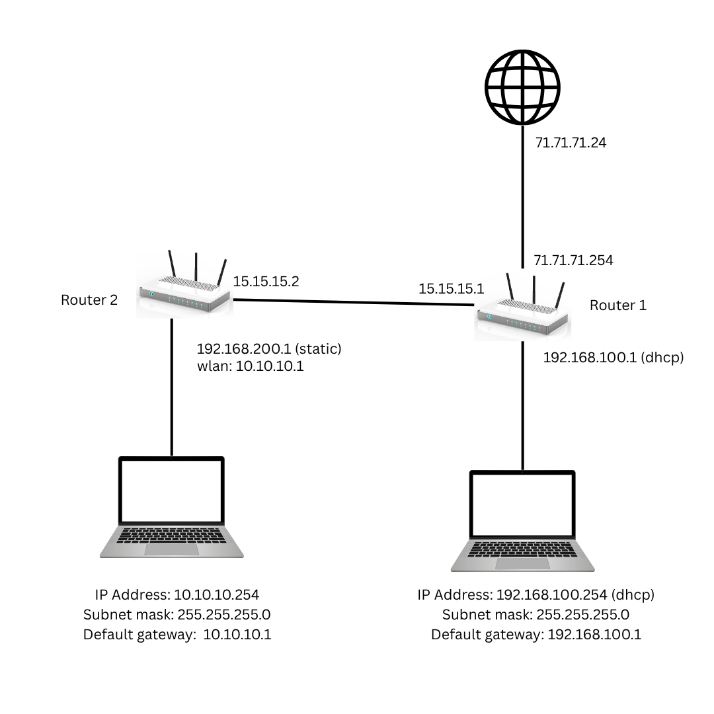

Detail Proyek
Rancang Bangun Jaringan: OSPF, Web Proxy & Hotspot
Proyek akhir kompetensi TKJ: merancang dan membangun jaringan dengan dua router Mikrotik, lengkap dengan dynamic routing OSPF, pembatasan situs melalui web proxy, dan autentikasi pengguna lewat hotspot.
Gambaran Proyek
Jaringan komputer yang baik perlu terhubung dengan efisien sekaligus aman. Pada proyek ini, dua router dihubungkan dengan OSPF sehingga pertukaran rute berjalan otomatis tanpa static route manual. Keamanan ditambahkan dengan web proxy yang memblokir situs tertentu dan mengarahkannya ke website SMKN 1 Bukittinggi, serta hotspot yang mewajibkan pengguna login terlebih dahulu.


Poin Penting
- Pembuatan kabel UTP (straight dan cross) dan pengujian dengan LAN tester
- Dynamic routing OSPF antara Router 1 dan Router 2
- DHCP server, DHCP client, DNS, dan NAT (masquerade)
- Web proxy untuk memblokir situs, dengan halaman redirect ke website sekolah
- Hotspot dengan login pengguna
Langkah Pengerjaan
- Membuat kabel UTP, lalu menguji hasilnya dengan LAN tester.
- Mengatur alamat IP, DNS, dan NAT pada Router 2, lalu membuat OSPF dan hotspot (wireless mode AP bridge).
- Pada Router 1: mengatur IP, DHCP client, DNS, NAT, dan aturan redirect, lalu membuat OSPF dan DHCP server.
- Mengaktifkan web proxy (port 3128), menambahkan situs yang diblokir, dan mengubah halaman
error.htmlagar mengarah ke website SMKN 1 Bukittinggi. - Menguji koneksi: ping antar perangkat, akses situs yang diblokir, dan login hotspot.
Hasil
Kedua router saling terhubung dan bertukar rute lewat OSPF, sehingga client di kedua jaringan dapat saling berkomunikasi dan mengakses internet. Situs yang diblokir otomatis dialihkan ke website SMKN 1 Bukittinggi, dan hanya pengguna yang berhasil login hotspot yang dapat memakai internet.
Kendala dan Solusi
- IP address conflict akibat kesalahan gateway: konfigurasi IP diperiksa ulang pada setiap interface.
- OSPF tidak berjalan karena network yang diaktifkan tidak sesuai: network pada OSPF dikoreksi.
- Web proxy gagal aktif karena port bentrok: port default diganti.
- Client gagal login hotspot akibat user profile: pengaturan user profile dan autentikasi diperbaiki.